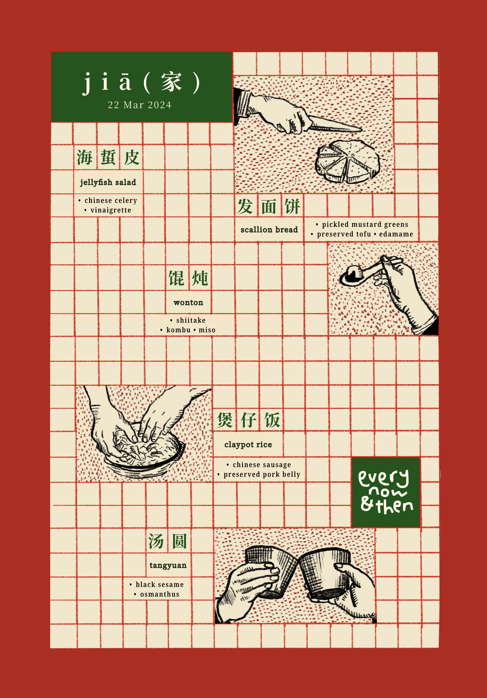
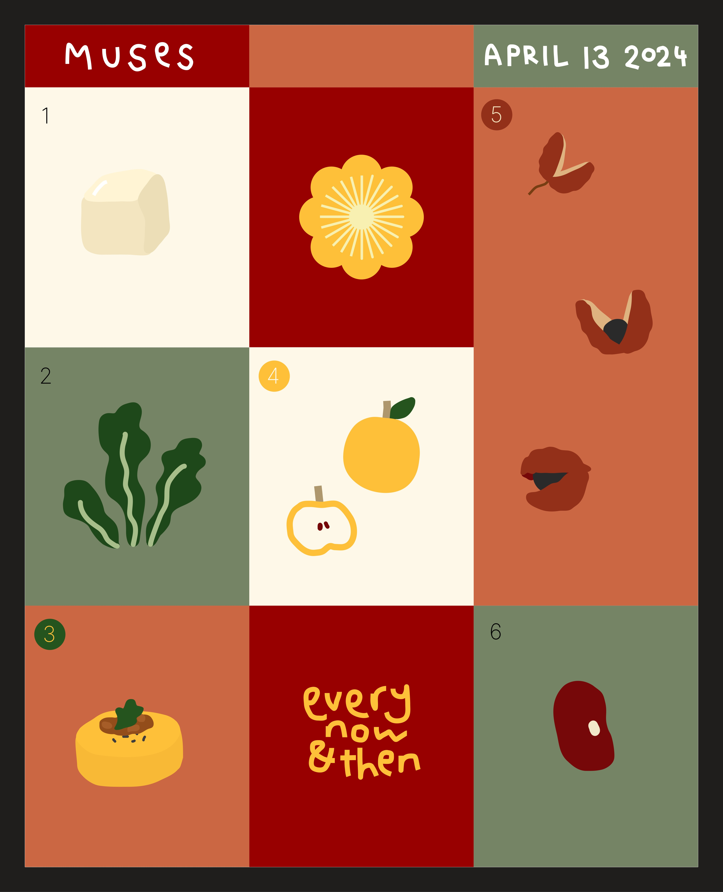

see you...every now & then



We are a dining concept open every now & then.
As someone who loves designing and hosting cozy dinner parties, my friends and I decided to open a pop-up restaurant in our apartment every 2-3 weeks.
I work as a creative director at the pop-up–in charge of poster, menu designs, as well as table set-up. Check some of our designs above!